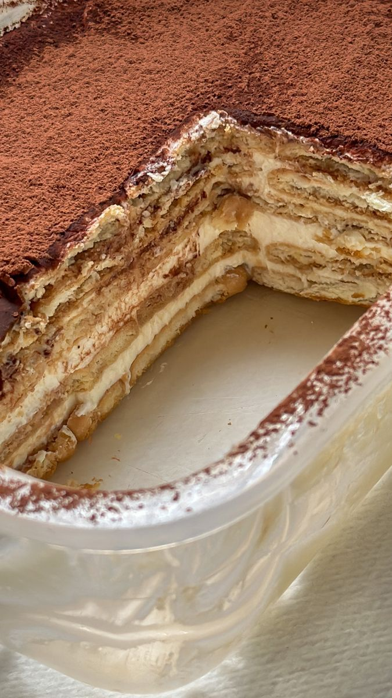

Pavê de Chocolate
Um pavê cremoso de chocolate, perfeito para sobremesas em família e encontros especiais.

Ingredientes
Rende 10 a 12 porções
- 1 pacote de biscoito maisena
- 2 xícaras de leite
- 1 lata de leite condensado
- 2 colheres de sopa de amido de milho
- 2 gemas
- 200g de chocolate meio amargo ou ao leite
- 2 colheres de sopa de manteiga
- 1 caixinha de creme de leite
- Chocolate granulado para decorar
Modo de Preparo
Tempo estimado: 40 minutos
- Em uma panela, misture o leite, leite condensado, amido de milho e gemas. Leve ao fogo médio, mexendo sempre até engrossar e formar um creme. Reserve.
- Em outra panela, derreta o chocolate com a manteiga e misture o creme de leite até ficar homogêneo.
- Em um refratário, faça camadas alternadas de biscoito e creme de chocolate, finalizando com o creme.
- Decore com chocolate granulado e leve à geladeira por pelo menos 2 horas antes de servir.
Dica do Chef: Para um sabor extra, molhe os biscoitos no leite com um pouco de essência de baunilha ou café antes de montar as camadas.